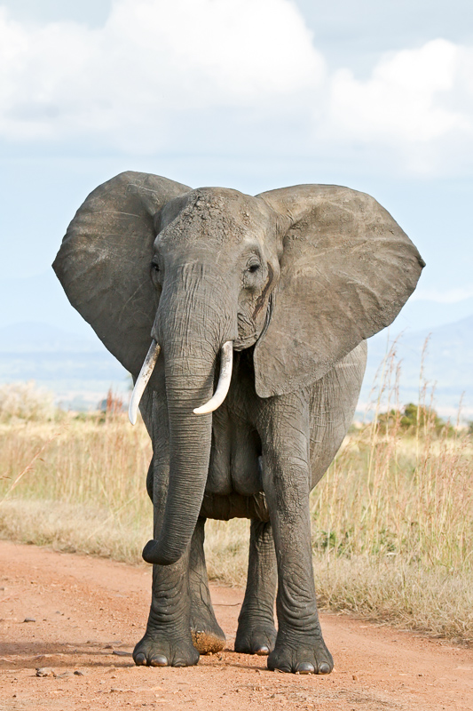
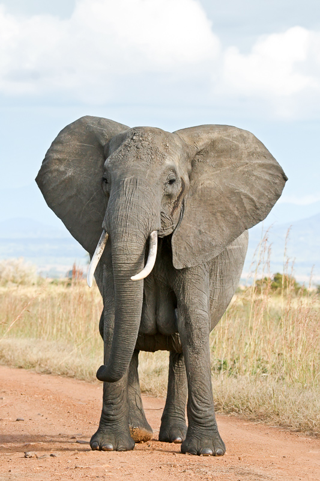

Слоно́вые , или слоны́ (лат. Elephantidae), — семейство класса млекопитающих из отряда хоботных. В настоящее время к этому семейству относятся 3 ныне живущих вида. Африканские саванные слоны — наиболее крупные наземные млекопитающие.
Ссылка 

Ненумерованный список
Нумерованный список